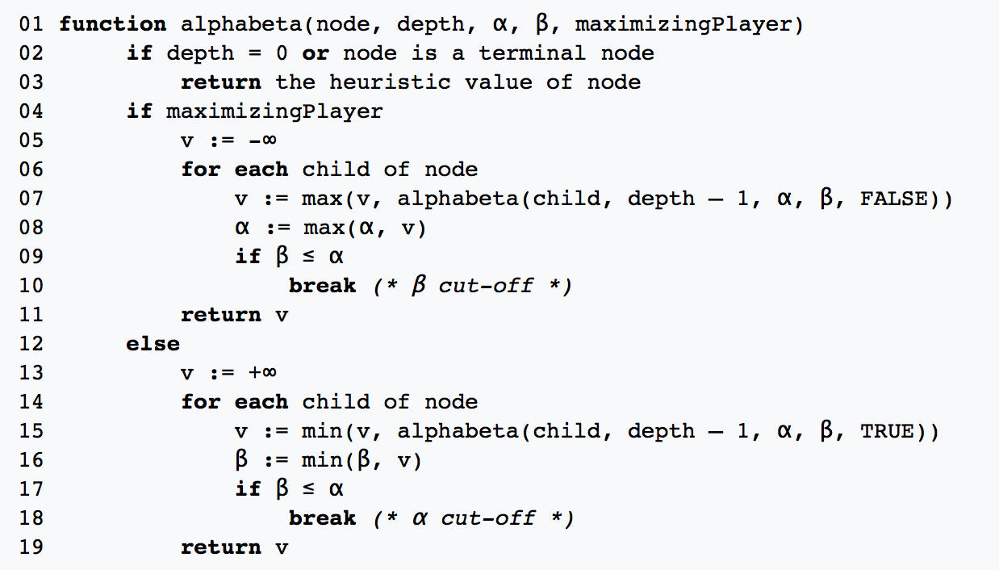
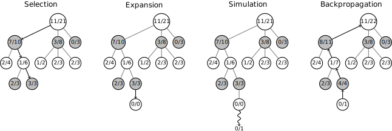
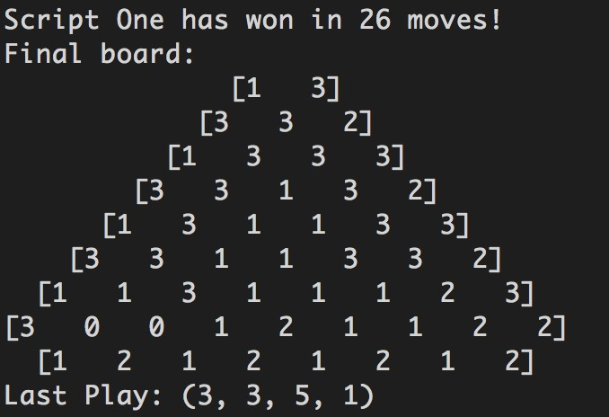

Problem Definition
-
In this assignment, we need to implement a script based on a strategy, like minimax search, alpha-beta search, a heuristic pruning method we learned in class. The target is to realize such strategy without using random or brute-force search algorithm.
Method and Implementation
Coordinate transfering method
- We first transfer the original 3-dimension coordinate into 2-dimension coordinate in the form of python list, in order to deal with the input and move easier.
- We parse the input string and convert it into a python list, then add -1 to the list to complement the board into a square board like following:
[1 3]
[3 0 2]
[1 0 0 3]
[3 1 0 0 2]
[1 0 0 0 0 3]
[3 0 0 0 0 0 2]
[1 2 1 2 1 2]
----> [-1 -1 -1 -1 -1 -1 -1 -1]
[1 3 -1 -1 -1 -1 -1 -1]
[3 0 2 -1 -1 -1 -1 -1]
[1 0 0 3 -1 -1 -1 -1]
[3 1 0 0 2 -1 -1 -1]
[1 0 0 0 0 3 -1 -1]
[3 0 0 0 0 0 2 -1]
[-1 1 2 1 2 1 2 -1]
- The original form (height,left,right) now changed into (len(board)-1-height, left)
- To change our move into original form: (x,y) changed back to be (len(board)-1-x,y,x-y)
The Minmax algorithm
- The first algorithm we use is the alpha-beta pruning. 
- We use Monte Carlo method to estimate the board state. For a given board state, we let 2 players play against each other until one of them win. Both players use random strategy. If the player representing me wins, then we record a positive score 1. Otherwise a negative score -1. This is one simulation. We simulate the game 100 times. And use the average score as the evaluation of the board.
- The lower boundary of the running time is kf(s)*(2b^(d/2)), the upper boundary is kf(s)*(b^d)
- b is the number of ways to move, normally from 1 to 9. d is the depth of searching, in our algorithm, we set is as 5. k is a supposed times of playing, we set it 10. f(s) is the cost time of each playing, it's a indeterminate value.
The running time of the Minmax algorithm
- The lower boundary of the running time is kf(s)*(2b^(d/2)), the upper boundary is kf(s)*(b^d)
- b is the number of ways to move, normally from 1 to 9. d is the depth of searching, in our algorithm, we set is as 5. k is a supposed times of playing, we set it 10. f(s) is the cost time of each playing, it's a indeterminate value.
The Monte Carlo Search Tree algorithm
- The second algorithm we used is the Monte Carlo Search Tree algorithm (MCTS). The procedure of the algorithm is the shown in the picture below. 
- The MCTS consists of 4 phases. In the selection phase, the node with highest potential reward will be chosen. The potential reward is measured by the UCB1 score "r + sqrt(2 log(N)/n)" where r represents the reward of that node, N represents the number of visit of the parent node, and n represents the visit time of the current node. If a node has no children, the algorithm enters the Expansion phase by expanding all possible plays under this circumstance. Then in the Simulation phase, we do the random rollout as described above to evaluate the board. Then we backpropagate the reward to ever node in this branch by adding this reward to the node's original cumulative reward.
- The reason we use this method is that we noticed some plays in the early stage doesn't show their effect in just several moves. The value is usually shown in the very end of the game. So we should not only search in a shallow tree, but need to find the effective move for the future. MCTS algorithm explores those most promising plays and ignore the branches with poor performance.
- We build the search tree with 400 explorations. In each exploration, we evaluate the board situation using the rollout method discussed above, but with only 2 simulations. We tried different combination of the parameters and found that the simulation time doesn't need to be too large. The more exploration will contribute much more to a higher wining rate.
The running time of the MCTS algorithm
- The time complexity of the MCTS algorithm is E * S, where E represents the number of exploration and S represents the number of simulation in each exploration.
Experiments and Results
- To test our algorithm, use command " java AtroposGame 7 "python3 rxqinPlayer.py" "
- We test our Minmax algorithm against the DEFAULT player and wins 8 games out of 10. The wining rate is 80%
- We test our MCTS algorithm against the DEFAULT player and wins 10 games out of 10. The wining rate is 100%
- In order to fine tune the parameters of the MCTS algorithm, we tried 3 different parameters combinations: E=800, S=1; E=400, S=2; E=200, S=4. And we found out the E=400, S=2 performs the best against others.
- We also let our 2 algorithms play against each other and the MCTS wins 7 out of 10 games. 
Discussion
- Strength of our MCTS algorithm:
- Weakness of MCTS algorithm:
Conclusions
This Atropos game is more like the Go rather than Chess. Each play usually shows its value until the very end of the game. So the limitation of the horizon in the Minmax algorithm makes it performs poorly in this game compared to the MCTS.
Credits and Bibliography
URLs of related materials on the Internet: